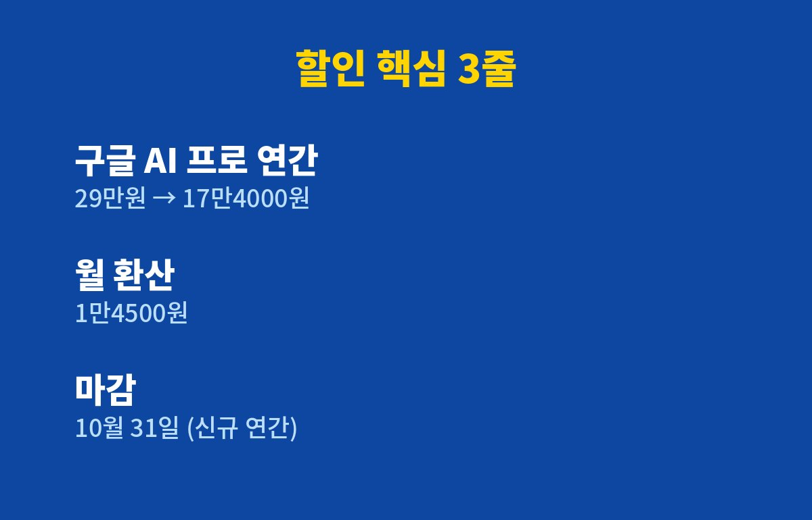
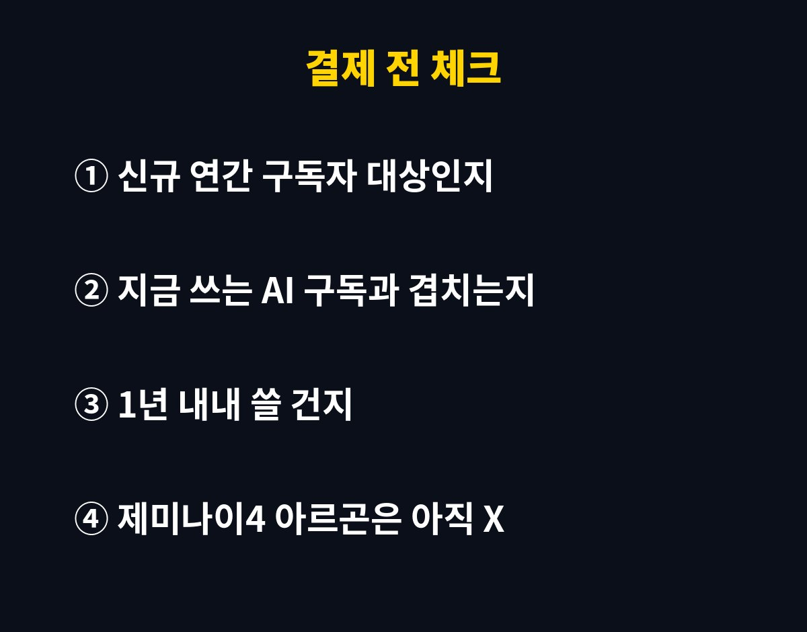

제미나이 구독(구글 AI 프로) 연간권이 지금 29만원에서 17만4000원으로 약 40% 내려가 있어요. 그런데 이 가격, 10월 31일까지만이에요. 챗GPT나 클로드 쓰다가 "AI 하나 더 써볼까" 고민 중이었다면, 사흘 안에 결정해야 하는 셈이죠.
근데 싸다고 덥석 결제하면 후회할 수도 있거든요. 뭐가 진짜 이득인지, 함정은 없는지 딱 필요한 것만 짚어볼게요.
ZDNet Korea 보도 기준으로 정리하면 이렇습니다.
| 항목 | 내용 |
|---|---|
| 요금제 | 구글 AI 프로 연간 구독권 |
| 기존 가격 | 29만원 |
| 할인가 | 17만4000원 |
| 월로 치면 | 약 1만4500원 |
| 아끼는 돈 | 11만6000원 |
| 대상·기간 | 신규 연간 구독자, 10월 31일까지 |
월 1만4500원이면 커피 세 잔 값 조금 넘는 수준이에요. 같은 1년을 쓴다면 11만원 넘게 차이가 나니까, 어차피 쓸 사람한텐 꽤 큰 차이죠.

이유는 단순해요. 국내에서 구글이 3등이거든요. 아이지에이웍스 모바일인덱스 기준 올해 8월 국내 AI 앱 신규 설치를 보면 챗GPT 64만7439건, 클로드 28만6823건, 제미나이 20만4672건이었어요. 제미나이가 셋 중 꼴찌였던 거죠.
그래서 구글이 지금 총공세 중이에요. 9월 30일엔 차세대 모델 제미나이 4 아르곤을 공개했고, 이병헌·김고은을 앞세운 광고까지 돌리고 있어요. 가격 할인은 그 공세의 한 축인 셈이고요. 덕분에 소비자 입장에선 땡큐죠.
여기서 오해하기 쉬운 부분이 있어요. "새 모델 나왔다니까 지금 결제하면 그거 쓰겠지?" 아니에요.
아르곤은 현재 일반 이용자에게 열려 있지 않아요. 일부 사이버 보안 전문가에게 먼저 제공되고, 안전성 검증 뒤 유료 API 고객과 구글 AI 울트라 가입자부터 확대할 계획이라고 해요. 프로 요금제에 언제 들어올지는 아직 발표가 없고요.
참고로 아르곤은 한 번에 내놓을 수 있는 답의 길이(출력 토큰)가 기존 6만4000개에서 100만 개로 늘었다고 해요. 긴 코드 분석이나 장시간 작업용이라 일반 사용자보단 개발자·전문직 쪽 이야기에 가깝습니다.
솔직히 말하면 "뭘 하느냐"에 달려 있어요. 구글이 이번에 강조하는 건 딥 리서치, 개인 AI 에이전트, 지메일·문서·스프레드시트 연동이에요. 회사나 학교에서 구글 문서·지메일을 매일 쓰는 직장인·대학생이라면 연동 편의성만으로도 값어치를 할 수 있죠.
반대로 이미 챗GPT나 클로드 유료 구독 중이고 거기에 만족한다면, 두 개를 동시에 내는 건 지갑에 부담이에요. 연간권은 한 번에 1년 치를 내는 거라 "써보고 별로면 끊지 뭐"가 월 구독보다 어렵다는 점도 기억하세요.

결국 기준은 하나예요. 1년 동안 꾸준히 쓸 자신이 있느냐. 그렇다면 10월 31일 전이 가장 싼 타이밍이고, 아니라면 무료로 먼저 충분히 써 보고 판단해도 늦지 않아요.
여러분은 지금 어떤 AI 쓰고 계세요? 챗GPT, 클로드, 제미나이 중 하나만 고르라면? 댓글로 알려 주세요!
AI·앱 요금 바뀌는 소식, 놓치기 전에 받아보려면 구독 눌러 두세요.
기사·공식 발표 기준이며 출시·가격 정보는 바뀔 수 있어요.